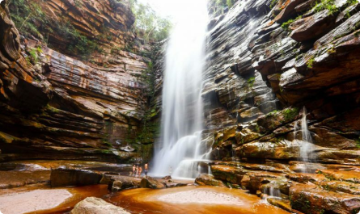

Diamantina
A Chapada Diamantina é uma chapada limitada por penhascos de 41.751 quilômetros quadrados localizada na Bahia central. As rochas da Chapada Diamantina fazem parte da unidade geológica conhecida como Supergrupo Espinhaço, que tomou este nome por ocorrer na serra do Espinhaço, no estado de Minas Gerais. Apresenta-se em geral como um altiplano extenso, com altitude média entre 800 e 1.200m acima do nível do mar.
Viajar de avião é quase sempre a maneira mais rápida para chegar à Chapada Diamantina, porém não necessariamente será a mais prática e muito menos a mais barata.
Quem não deseja fazer o trecho final até a Chapada Diamantina de avião poderá recorrer aos ônibus intermunicipais. A principal rota, a partir de Salvador, é para a cidade de Lençóis.
Muitos viajantes que chegam à Chapada Diamantina optam pela viagem de carro. Ter um veículo próprio facilita no deslocamento entre as atrações e ajuda a economizar muito com passeios.
Localizado no centro de Lençóis, com vista panorâmica do Parque Nacional da Chapada Diamantina
Localizado no centro de Lençóis, com vista panorâmica do Parque Nacional da Chapada Diamantina
Localizado no centro de Lençóis, com vista panorâmica do Parque Nacional da Chapada Diamantina
Localizado no centro de Lençóis, com vista panorâmica do Parque Nacional da Chapada Diamantina